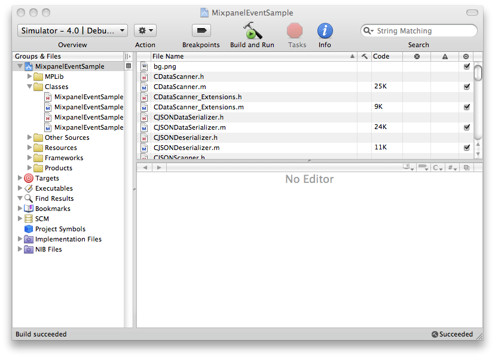
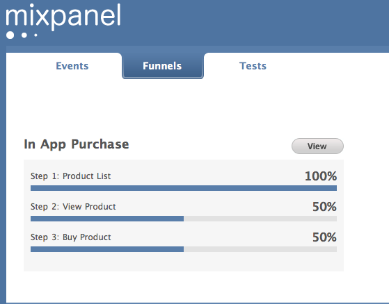

If you want to track user behavior on your iPhone\iPad application, first download the Mixpanel iOS API by cloning the git repository:
git clone $REPO_LOCATION
or download the latest version from $DOWNLOAD_LOCATION and extract the files. The respository has two folders:
Adding Mixpanel to your Xcode project is as easy as:
And that’s it. 
The first thing you need to do in order to use Mixpanel is to initialize the MixpanelAPI object. We recommend doing this in applicationDidFinishLaunching: of application:didFinishLaunchingWithOptions in your Application delegate.
- (BOOL)application:(UIApplication *)application didFinishLaunchingWithOptions:(NSDictionary *)launchOptions {
// Override point for customization after application launch.
mixpanel = [MixpanelAPI sharedAPIWithToken:MIXPANEL_TOKEN];
// Add the view controller's view to the window and display.
[window addSubview:viewController.view];
[window makeKeyAndVisible];
return YES;
}
After initializing the MixpanelAPI object, you are ready to track events. This can be done with the following code snippet:
- (IBAction) registerEvent:(id)sender {
MixpanelAPI *mixpanel = [MixpanelAPI sharedAPI];
[mixpanel track:@"Player Create"];
}
If you want to add properties to the event you can do the following:
- (IBAction) registerEvent:(id)sender {
MixpanelAPI *mixpanel = [MixpanelAPI sharedAPI];
[mixpanel track:@"Player Create"
properties:[NSDictionary dictionaryWithObjectsAndKeys:[genderControl titleForSegmentAtIndex:genderControl.selectedSegmentIndex], @"gender",
[weaponControl titleForSegmentAtIndex:weaponControl.selectedSegmentIndex], @"weapon", nil]];
}
This code snippet is taken from the MixpanelEventSample Project. Line 15-20 of the MixpanelEventSampleViewController.m file.
Funnel analysis helps you increase conversions for any goal within your application. Here is how you would use them in your application. Lets say you have a button in your UI that launches a product list for your application. The first step would be something like the following:
-(void) productViewLoaded {
MixpanelAPI *mixpanel = [MixpanelAPI sharedAPI];
[mixpanel trackFunnel:@"In App Purchase" step:1 goal:@"Product List"];
// product list code.
}
Then there is a second step where a user launches more details for a specific product:
-(void) selectProduct:(NSString*) product {
MixpanelAPI *mixpanel = [MixpanelAPI sharedAPI];
[mixpanel trackFunnel:@"In App Purchase"
step:2
goal:@"View Product"
properties:[NSDictionary dictionaryWithObject:product forKey:@"product"]];
// view product code.
}
The final step is where the user purchases your product:
-(void) buyProduct:(NSString*) product {
MixpanelAPI *mixpanel = [MixpanelAPI sharedAPI];
[mixpanel trackFunnel:@"In App Purchase"
step:3
goal:@"Buy Product"
properties:[NSDictionary dictionaryWithObject:product forKey:@"product"]];
// buy product code.
}**
When viewing the Mixpanel Dashboard, you would see something like this. Please see the MixpanelFunnelSample project for the full source code. 
If you want to track an event as a funnel step, you can register Funnels as follows:
- (BOOL)application:(UIApplication *)application didFinishLaunchingWithOptions:(NSDictionary *)launchOptions {
// Override point for customization after application launch.
MixpanelAPI *mixpanel = [MixpanelAPI sharedAPIWithToken:@"YOUR_API_TOKEN"];
NSArray *steps = [NSArray arrayWithObjects:@"Product List", @"View Product", @"Buy Product", nil];
[mixpanel registerFunnel:@"In App Purchase" steps:steps];
// Add the view controller's view to the window and display.
[window addSubview:viewController.view];
[window makeKeyAndVisible];
return YES;
}
Then the code above would turn into the following:
-(void) productViewLoaded {
MixpanelAPI *mixpanel = [MixpanelAPI sharedAPI];
[mixpanel track:@"Product List"];
// product list code.
}
-(void) selectProduct:(NSString*) product {
MixpanelAPI *mixpanel = [MixpanelAPI sharedAPI];
[mixpanel track:@"View Product"
properties:[NSDictionary dictionaryWithObject:product forKey:@"product"]];
// view product code.
}
-(void) buyProduct:(NSString*) product {
MixpanelAPI *mixpanel = [MixpanelAPI sharedAPI];
[mixpanel track:@"Buy Product"
properties:[NSDictionary dictionaryWithObject:product forKey:@"product"]];
// buy product code.
}
Or you can use the Funnel Builder, for more information on how to do this, please visit http://mixpanel.com/api/docs/guides/funnel-analysis
Super properties are an easy way to store data about your users. They are global properties that get attached to everything you are tracking. More information can be found here.
If you want to register a super property for your current user, you can do it as follows:
MixpanelAPI *mixpanel = [MixpanelAPI sharedAPI];
[mixpanel registerSuperProperties:[NSDictionary dictionaryWithObject:@"Paid" forKey:@"User Type"]
eventType:kMPLibEventTypeAll];
This call will register the “User Type” property with a value of @”Paid” for the current user on both events and funnels. The permitted values for the eventType parameter are:
* kMPLibEventTypeAll: Attach the super property to events and funnels.
* kMPLibEventTypeEvent: Attach the super property to events.
* kMPLibEventTypeFunnel: Attach the super property to funnels.
If the “User Type” property was previously registered, its value will be overwritten. If you do not want to overwrite existing values of a super property you can use the following call:
MixpanelAPI *mixpanel = [MixpanelAPI sharedAPI];
[mixpanel registerSuperPropertiesOnce:[NSDictionary dictionaryWithObject:@"Paid" forKey:@"User Type"]
eventType:kMPLibEventTypeAll];
After this call, the value of the “User Type” property will be written only if it did not exist. There is another flavor of registerSuperPropertiesOnce:eventType and it can be used as follows:
MixpanelAPI *mixpanel = [MixpanelAPI sharedAPI];
[mixpanel registerSuperPropertiesOnce:[NSDictionary dictionaryWithObject:@"Paid" forKey:@"User Type"]
eventType:kMPLibEventTypeAll
defaultValue:@"Free"];
This call will write out the new value for the “User Type” property if it does not exist or if its current value is “Free”.
MixpanelAPI uses the UDID of the current device as its default identifier. You can easily change the identifier with the following call:
MixpanelAPI *mixpanel = [MixpanelAPI sharedAPI];
[mixpanel identifyUser:username];
Where username is an NSString.